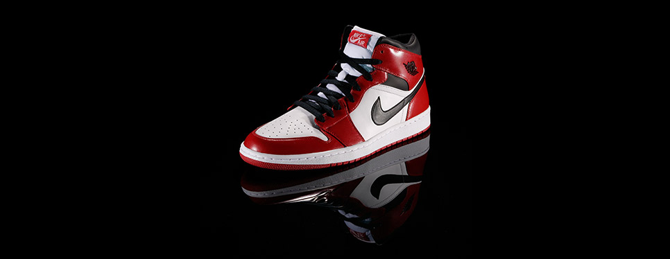

Air Jordan I | Designer : Peter Moore | Released : 1985 | Original Price : $65
Modern sneaker culture had its roots in the air; that is, the original Air Jordan that released in 1985. Nike, and subsequently the Jordan Brand, has honored this iconic silhouette numerous times since with releases of the Retro 1.
The Chicago Bulls used their third overall draft pick on Jordan, a 1982 NCAA champion who would go on to win Olympic gold later in the summer of 1984. Jordan signed a five-year endorsement deal with Nike, reportedly worth $2.5 million (plus royalties), an enormous outlay for an athlete who hadn't yet proven himself on the professional level.
The NBA banned the original Air Jordan for not meeting the league's stringent policy on uniforms and colors. Jordan wore them anyway and faced a $5,000-per-game fine as a result. Recognizing a unique marketing opportunity when it presented itself, Nike happily paid the fine. And MJ rocked them all the way to his Rookie of the Year honor.
This Air Jordan was the only one in the series to feature the familiar Nike Swoosh logo. And predating the Jumpman logo, the OG shoe featured the Wings logo - a basketball with wings stretching from both sides and "Air Jordan" printed above the ball. Nike filed the Wings logo as a trademark on May 7, 1985.
Leather overlays on the upper offered durability and easy color blocking, and a perforated leather toe box lent ventilation.